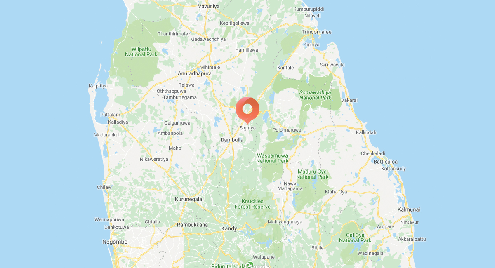

Sigiriya known as Lion Rock pronounced see-gi-ri-yə. The ancient rock fortress is located in the Central Province of Sri Lanka, in the
town of Dambulla. A site of historical and archaeological significance that is dominated by a massive column of rock approximately 180 m or 590
ft in high. Moreover, Dambulla is directly accessible through private transport, or by train and bus from Colombo.
According to the ancient Sri Lankan chronicle the Chulavamsa, the area was a large forest. Remanences of a forest in the surrounding areas
can be viewed today. The rock location was selected by King Kashyapa (AD 477–495) as his capital. King Kashyapa built the palace on top of
this rock and decorated the sides with colorful frescoes. Half way up the fortress is a small plateau on the side. The king built a gateway
in the form of an enormous lion. The name of this place is derived from this structure; Sīnhāgiri, the Lion Rock.
After the king’s death, Sigiriya was abandoned as the capital and the royal palace. Sigiriya was later used as a Buddhist
monastery until the 14th century. However, Sigiriya today is a UNESCO listed World Heritage Site. It is one of the best preserved examples of
ancient urban planning.
Rangiri Dambulla Cave Temple is also located in the compound. A sacred pilgrimage site for 22 centuries. The cave monastery contains
five sanctuaries. One of the largest best-preserved cave-temples in Sri Lanka. The Buddhist mural paintings covering an area of 2,100 m2
are of particular importance with a total of 157 statues. The cave temple is also a UNESCO listed World Heritage Site.

Climb to the summit of Sigiriya or admire its beauty from a hot air balloon ride; there’s no shortage of things to do in Sigiriya!